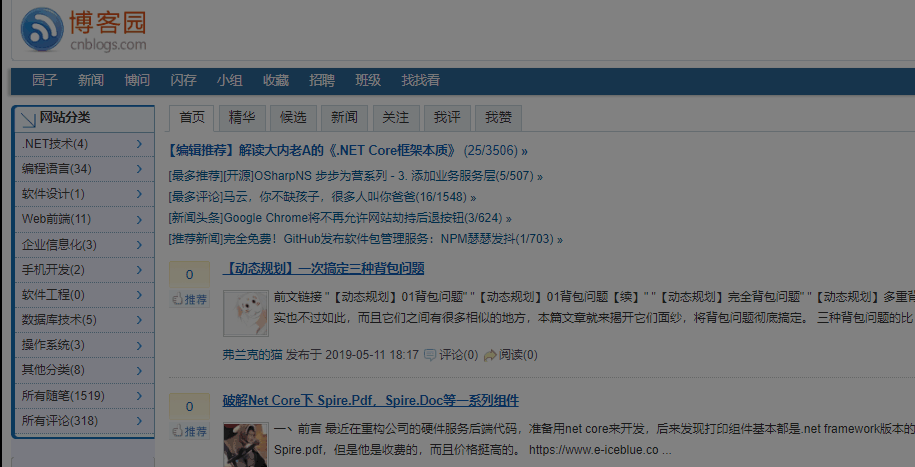
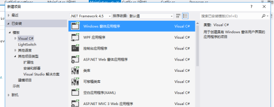
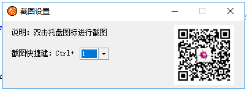
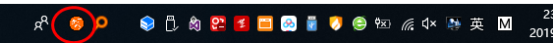
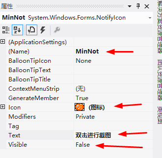
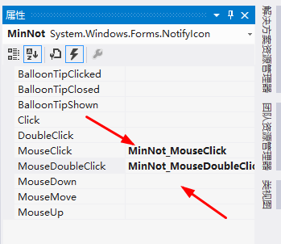

Windows 7 系统，开发软件为Microsoft Visual Studio Ultimate 2012
屏幕截屏，保存到图片或者保存到剪切板。截屏范围可以随意移动或者改变大小，自由度很高。先预览一下效果：

共2个窗体，1个是主窗体，主要功能进行热键设置，抓取屏幕到图片传给另一个窗体，另一个窗体对传过来的图片继续截取等操作。


窗体主要属性设置如下：
//窗口样式
this.FormBorderStyle = System.Windows.Forms.FormBorderStyle.FixedDialog;
//窗口图标
this.Icon = ((System.Drawing.Icon)(resources.GetObject("$this.Icon")));
//禁止最大化
this.MaximizeBox = false;
//窗口名称
this.Name = "PicCut";
//窗口初始位置为屏幕中心
this.StartPosition = System.Windows.Forms.FormStartPosition.CenterScreen;
//窗口标题为“截图设置”
this.Text = "截图设置";
//窗口浮在所有窗口上面
this.TopMost = true;
此窗口内主要包括2个label控件，1个ComboBox和1个PictureBox，摆放位置如上图。label用于显示文字说明；ComboBox用于显示热键0—9个数字供选择；PictureBox用于显示二维码图片。

主界面拖入“notifyIcon”，主要属性设置如下图，其中Text是鼠标滑动到拖盘区域图标上的提示；Icon是托盘图标；Visible设置为false，默认不显示托盘区域图标。

主要程序代码。窗体载入时，最小化窗体，同时设置ComboBox空间的默认值。
private void PicCut_Load(object sender, EventArgs e)
{
this.WindowState = FormWindowState.Minimized;
NumberCbox.SelectedIndex = CutPicSet.Default.KeyNumber;
}
窗口大小发生变化时，如果窗口最小化，隐藏当前窗体，托盘区域显示图标。
private void PicCut_SizeChanged(object sender, EventArgs e)
{
if (this.WindowState == FormWindowState.Minimized)
{
this.Hide();
MinNot.Visible = true;
}
}
上述两段代码实现了，程序开始运行时候，窗口最小化隐藏，同时托盘区域显示图标。

private void MinNot_MouseDoubleClick(object sender, MouseEventArgs e)
{
if (e.Button==MouseButtons.Left)
{
//显示截图窗体
ShowCutPic();
}
}
ShowCutPic函数：protected void ShowCutPic()
{
// 创建的空白图片和屏幕大小一样大的图片
Bitmap CatchBmp = new Bitmap(Screen.AllScreens[0].Bounds.Width, Screen.AllScreens[0].Bounds.Height);
// 我们可以通过Graphics这个类在这个空白图片上画图
Graphics g = Graphics.FromImage(CatchBmp);
// 把屏幕图片拷贝到我们创建的空白图片 CatchBmp中
g.CopyFromScreen(new Point(0, 0), new Point(0, 0), new Size(Screen.AllScreens[0].Bounds.Width, Screen.AllScreens[0].Bounds.Height));
//这个我们截图的窗体创建截图窗体
cutter = new CutPic();
// 截图窗体的图片属性设置我们刚才新建的图片;
cutter.Image = CatchBmp;
//显示窗体
cutter.ShowDialog();
}
private void MinNot_MouseClick(object sender, MouseEventArgs e)
{
if (e.Button== MouseButtons.Right)
{
//显示主窗体
this.Show();
//隐藏托盘图标
MinNot.Visible = false;
//当前窗口普通设置
this.WindowState = FormWindowState.Normal;
}
}
/// <summary>
/// 如果函数执行成功，返回值不为0。
/// 如果函数执行失败，返回值为0。要得到扩展错误信息，调用GetLastError。
/// </summary>
/// <param name="hWnd">要定义热键的窗口的句柄</param>
/// <param name="id">定义热键ID（不能与其它ID重复）</param>
/// <param name="fsModifiers">标识热键是否在按Alt、Ctrl、Shift、Windows等键时才会生效</param>
/// <param name="vk">定义热键的内容</param>
/// <returns></returns>
[DllImport("user32.dll", SetLastError = true)]
public static extern bool RegisterHotKey(IntPtr hWnd, int id, KeyModifiers fsModifiers, Keys vk);
/// <summary>
/// 注销热键
/// </summary>
/// <param name="hWnd">要取消热键的窗口的句柄</param>
/// <param name="id">要取消热键的ID</param>
/// <returns></returns>
[DllImport("user32.dll", SetLastError = true)]
public static extern bool UnregisterHotKey(IntPtr hWnd, int id);
/// <summary>
/// 辅助键名称。
/// Alt, Ctrl, Shift, WindowsKey
/// </summary>
[Flags()]
public enum KeyModifiers { None = 0, Alt = 1, Ctrl = 2, Shift = 4, WindowsKey = 8 }
/// <summary>
/// 注册热键
/// </summary>
/// <param name="hwnd">窗口句柄</param>
/// <param name="hotKey_id">热键ID</param>
/// <param name="keyModifiers">组合键</param>
/// <param name="key">热键</param>
public static void RegHotKey(IntPtr hwnd, int hotKeyId, KeyModifiers keyModifiers, Keys key)
{
if (!RegisterHotKey(hwnd, hotKeyId, keyModifiers, key))
{
int errorCode = Marshal.GetLastWin32Error();
if (errorCode == 1409)
{
MessageBox.Show("热键被占用 ！");
}
else
{
MessageBox.Show("注册热键失败！错误代码：" + errorCode);
}
}
}
/// <summary>
/// 注销热键
/// </summary>
/// <param name="hwnd">窗口句柄</param>
/// <param name="hotKey_id">热键ID</param>
public static void UnRegHotKey(IntPtr hwnd, int hotKeyId)
{
//注销指定的热键
UnregisterHotKey(hwnd, hotKeyId);
}private const int WM_HOTKEY = 0x312; //窗口消息-热键
private const int WM_CREATE = 0x1; //窗口消息-创建
private const int WM_DESTROY = 0x2; //窗口消息-销毁
private const int Space = 0x3572; //热键ID
protected override void WndProc(ref Message m)
{
base.WndProc(ref m);
switch (m.Msg)
{
case WM_HOTKEY: //窗口消息-热键ID
switch (m.WParam.ToInt32())
{
case Space: //热键ID
//按下热键显示截图窗体
ShowCutPic();
break;
default:
break;
}
break;
case WM_CREATE: //窗口消息-创建
SetHotKey(CutPicSet.Default.KeyNumber);
break;
case WM_DESTROY: //窗口消息-销毁
UnRegHotKey(Handle, Space); //销毁热键
break;
default:
break;
}
}
public void SetHotKey(int keynumber)
{
if (keynumber == 0)
{
RegHotKey(Handle, Space, KeyModifiers.Ctrl, Keys.D0);
}
else if (keynumber == 1)
{
RegHotKey(Handle, Space, KeyModifiers.Ctrl, Keys.D1);
}
else if (keynumber == 2)
{
RegHotKey(Handle, Space, KeyModifiers.Ctrl, Keys.D2);
}
else if (keynumber == 3)
{
RegHotKey(Handle, Space, KeyModifiers.Ctrl, Keys.D3);
}
else if (keynumber == 4)
{
RegHotKey(Handle, Space, KeyModifiers.Ctrl, Keys.D4);
}
else if (keynumber == 5)
{
RegHotKey(Handle, Space, KeyModifiers.Ctrl, Keys.D5);
}
else if (keynumber == 6)
{
RegHotKey(Handle, Space, KeyModifiers.Ctrl, Keys.D6);
}
else if (keynumber == 7)
{
RegHotKey(Handle, Space, KeyModifiers.Ctrl, Keys.D7);
}
else if (keynumber == 8)
{
RegHotKey(Handle, Space, KeyModifiers.Ctrl, Keys.D8);
}
else
{
RegHotKey(Handle, Space, KeyModifiers.Ctrl, Keys.D9);
}
}
private void NumberCbox_SelectedIndexChanged(object sender, EventArgs e)
{
//把配置文件设置NumberCbox的选择值
CutPicSet.Default.KeyNumber = NumberCbox.SelectedIndex;
CutPicSet.Default.Save();
//先卸载原来注册的热键
UnRegHotKey(Handle, Space);
//从新设置选择的热键
SetHotKey(NumberCbox.SelectedIndex);
}
新建窗体CutPic，名称与之前的名称相对应，主要属性设置如下：
Name：CutPic
WindowState:Maximized
TopMost:true
FormBorderStyle:None
主要代码如下：
private Point m_ptStart; //起始点位置
private Point m_ptCurrent; //当前鼠标位置
private Point m_ptTempForMove; //移动选框的时候临时用
private Rectangle m_rectClip; //限定鼠标活动的区域
private Rectangle[] m_rectDots = new Rectangle[8]; //八个控制点
protected bool m_bMoving;
protected bool m_bChangeWidth;
protected bool m_bChangeHeight;
protected bool m_bMouseHover;
private bool _IsDrawed; /// 获取当前是否已经选择区域
private Image _Image;
///
/// 要裁剪的图像
///
[Description("要裁剪的图像"), Category("Customs")]
public Image Image
{
get { return _Image; }
set
{
if (value == this._Image) return;
_Image = value;
// this.Clear();
}
}
private Color _MaskColor = Color.FromArgb(125, 0, 0, 0);
///
/// 遮罩颜色
///
[Description("遮罩颜色"), Category("Customs")]
public Color MaskColor
{
get { return _MaskColor; }
set
{
if (_MaskColor == value) return;
_MaskColor = value;
if (this._Image != null) this.Invalidate();
}
}
private Rectangle _SelectedRectangle;/// 获取或设置悬着区域
public CutPic()
{
SetStyle(ControlStyles.UserPaint, true);
SetStyle(ControlStyles.AllPaintingInWmPaint, true); // 禁止擦除背景.
SetStyle(ControlStyles.DoubleBuffer, true); // 双缓冲
InitializeComponent();
}
private void CutPic_MouseDown(object sender, MouseEventArgs e)
{
if (this._Image == null)
{
return;//Image属性null或者已经锁定选择 直接返回
}
m_ptStart = e.Location;
m_bChangeHeight = true;
m_bChangeWidth = true;
//判断若不在限定范围内操作 返回
m_rectClip = this.DisplayRectangle;
Size sz = this.Size;
sz = this.Size;
m_rectClip.Intersect(new Rectangle(Point.Empty, sz));
m_rectClip.Width++; m_rectClip.Height++;
Cursor.Clip = RectangleToScreen(m_rectClip);
if (ToolsPanel.Visible==true)
{
ToolsPanel.Visible = false;
}
//如果 已经选择区域 若鼠标点下 判断是否在控制顶点上
if (this._IsDrawed)
{
this._IsDrawed = false; //默认表示 要更改选取设置 清楚IsDrawed属性
if (m_rectDots[0].Contains(e.Location))
{
m_ptStart.X = this._SelectedRectangle.Right;
m_ptStart.Y = this._SelectedRectangle.Bottom;
}
else if (m_rectDots[1].Contains(e.Location))
{
m_ptStart.Y = this._SelectedRectangle.Bottom;
m_bChangeWidth = false;
}
else if (m_rectDots[2].Contains(e.Location))
{
m_ptStart.X = this._SelectedRectangle.X;
m_ptStart.Y = this._SelectedRectangle.Bottom;
}
else if (m_rectDots[3].Contains(e.Location))
{
m_ptStart.X = this._SelectedRectangle.Right;
m_bChangeHeight = false;
}
else if (m_rectDots[4].Contains(e.Location))
{
m_ptStart.X = this._SelectedRectangle.X;
m_bChangeHeight = false;
}
else if (m_rectDots[5].Contains(e.Location))
{
m_ptStart.X = this._SelectedRectangle.Right;
m_ptStart.Y = this._SelectedRectangle.Y;
}
else if (m_rectDots[6].Contains(e.Location))
{
m_ptStart.Y = this._SelectedRectangle.Y;
m_bChangeWidth = false;
}
else if (m_rectDots[7].Contains(e.Location))
{
m_ptStart = this._SelectedRectangle.Location;
}
else if (this._SelectedRectangle.Contains(e.Location))
{
m_bMoving = true;
m_bChangeWidth = false;
m_bChangeHeight = false;
}
else { this._IsDrawed = true; } //若以上条件不成立 表示不需要更改设置
}
}
private void CutPic_MouseClick(object sender, MouseEventArgs e)
{
if (MouseButtons.Right==e.Button)
{
this.DialogResult = DialogResult.OK;
this.Close();
}
}
private void CutPic_Paint(object sender, PaintEventArgs e)
{
Graphics g = e.Graphics;
if (_Image!=null)
{
g.DrawImage(this._Image,0,0,this._Image.Width,this._Image.Height);//原图
using (SolidBrush sb = new SolidBrush(this._MaskColor))
{
g.FillRectangle(sb, this.ClientRectangle);//遮罩
}
if (!this._SelectedRectangle.IsEmpty)
this.DrawSelectedRectangle(g);//选框
}
SetPanleLocation();
}
private void CutPic_Load(object sender, EventArgs e)
{
for (int i = 0; i < 8; i++)
{
m_rectDots[i].Size = new Size(5, 5);
}
m_ptTempForMove = this.DisplayRectangle.Location;
}
private void CutPic_MouseMove(object sender, MouseEventArgs e)
{
m_ptCurrent = e.Location;
if (this._Image == null)
{
return;
}
if (this._IsDrawed)
{//如果已经绘制 移动过程中判断是否需要设置鼠标样式
this.SetCursorStyle(e.Location);
}
else if (e.Button == MouseButtons.Left)
{//否则可能表示在选择区域或重置大小
if (m_bChangeWidth)
{//是否允许选区宽度改变 如重置大小时候 拉动上边和下边中点时候
this._SelectedRectangle.X = e.Location.X > m_ptStart.X ? m_ptStart.X : e.Location.X;
this._SelectedRectangle.Width = Math.Abs(e.Location.X - m_ptStart.X);
}
if (m_bChangeHeight)
{
this._SelectedRectangle.Y = e.Location.Y > m_ptStart.Y ? m_ptStart.Y : e.Location.Y;
this._SelectedRectangle.Height = Math.Abs(e.Location.Y - m_ptStart.Y);
}
if (m_bMoving)
{//如果是移动选区 判断选区移动范围
int tempX = m_ptTempForMove.X + e.X - m_ptStart.X;
int tempY = m_ptTempForMove.Y + e.Y - m_ptStart.Y;
if (tempX < 0) tempX = 0;
if (tempY < 0) tempY = 0;
if (this._SelectedRectangle.Width + tempX >= m_rectClip.Width) tempX = m_rectClip.Width - this._SelectedRectangle.Width - 1;
if (this._SelectedRectangle.Height + tempY >= m_rectClip.Height) tempY = m_rectClip.Height - this._SelectedRectangle.Height - 1;
this._SelectedRectangle.X = tempX;
this._SelectedRectangle.Y = tempY;
}
this.Invalidate();
}
else if (!this._IsDrawed)
{
this.Invalidate();//否则 在需要绘制放大镜并且还没有选好区域同时 都重绘
}
}
///
/// 判断鼠标当前位置显示样式
///
/// 鼠标坐标
protected virtual void SetCursorStyle(Point pt)
{
if (m_rectDots[0].Contains(pt) || m_rectDots[7].Contains(pt))
this.Cursor = Cursors.SizeNWSE;
else if (m_rectDots[1].Contains(pt) || m_rectDots[6].Contains(pt))
this.Cursor = Cursors.SizeNS;
else if (m_rectDots[2].Contains(pt) || m_rectDots[5].Contains(pt))
this.Cursor = Cursors.SizeNESW;
else if (m_rectDots[3].Contains(pt) || m_rectDots[4].Contains(pt))
this.Cursor = Cursors.SizeWE;
else if (this._SelectedRectangle.Contains(pt))
this.Cursor = Cursors.SizeAll;
else
this.Cursor = Cursors.Default;
}
private void CutPic_MouseUp(object sender, MouseEventArgs e)
{
this._IsDrawed = !this._SelectedRectangle.IsEmpty;
m_ptTempForMove = this._SelectedRectangle.Location;
m_bMoving = false;
m_bChangeWidth = false;
m_bChangeHeight = false;
Cursor.Clip = Rectangle.Empty;
ToolsPanel.Visible = true;
this.Invalidate();
}
public void SetPanleLocation()
{
ToolsPanel.Left = this._SelectedRectangle.Left + this._SelectedRectangle.Width - ToolsPanel.Width;
ToolsPanel.Top = this._SelectedRectangle.Top+this._SelectedRectangle.Height+5;
}
///
/// 绘制选框
///
/// 绘图表面
protected virtual void DrawSelectedRectangle(Graphics g)
{
m_rectDots[0].Y = m_rectDots[1].Y = m_rectDots[2].Y = this._SelectedRectangle.Y - 2;
m_rectDots[5].Y = m_rectDots[6].Y = m_rectDots[7].Y = this._SelectedRectangle.Bottom - 2;
m_rectDots[0].X = m_rectDots[3].X = m_rectDots[5].X = this._SelectedRectangle.X - 2;
m_rectDots[2].X = m_rectDots[4].X = m_rectDots[7].X = this._SelectedRectangle.Right - 2;
m_rectDots[3].Y = m_rectDots[4].Y = this._SelectedRectangle.Y + this._SelectedRectangle.Height / 2 - 2;
m_rectDots[1].X = m_rectDots[6].X = this._SelectedRectangle.X + this._SelectedRectangle.Width / 2 - 2;
g.DrawImage(this._Image, this._SelectedRectangle, this._SelectedRectangle, GraphicsUnit.Pixel);
g.DrawRectangle(Pens.Cyan, this._SelectedRectangle.Left, this._SelectedRectangle.Top, this._SelectedRectangle.Width - 1, this._SelectedRectangle.Height - 1);
foreach (Rectangle rect in m_rectDots)
g.FillRectangle(Brushes.Yellow, rect);
string str = string.Format("X:{0} Y:{1} W:{2} H:{3}",
this._SelectedRectangle.Left, this._SelectedRectangle.Top, this._SelectedRectangle.Width, this._SelectedRectangle.Height);
Size szStr = g.MeasureString(str, this.Font).ToSize();
Point ptStr = new Point(this._SelectedRectangle.Left, this._SelectedRectangle.Top - szStr.Height - 5);
if (ptStr.Y < 0) ptStr.Y = this._SelectedRectangle.Top + 5;
if (ptStr.X + szStr.Width > this.Width) ptStr.X = this.Width - szStr.Width;
using (SolidBrush sb = new SolidBrush(Color.FromArgb(125, 0, 0, 0)))
{
g.FillRectangle(sb, new Rectangle(ptStr, szStr));
g.DrawString(str, this.Font, Brushes.White, ptStr);
}
}
private void SaveBT_Click(object sender, EventArgs e)
{
SaveFileDialog saveFileDialog = new SaveFileDialog();
saveFileDialog.FileName = DateTime.Now.ToString("yyyyMMddhhmmss");
saveFileDialog.Filter = "png|*.png|bmp|*.bmp|jpg|*.jpg|gif|*.gif";
if (saveFileDialog.ShowDialog() != DialogResult.Cancel)
{
System.Drawing.Rectangle cropArea = new System.Drawing.Rectangle(_SelectedRectangle.X, _SelectedRectangle.Y, _SelectedRectangle.Width, _SelectedRectangle.Height);
Bitmap bmpImage = new Bitmap(this._Image);
Bitmap bmpCrop = bmpImage.Clone(cropArea, bmpImage.PixelFormat);
bmpCrop.Save(saveFileDialog.FileName);
this.DialogResult = DialogResult.OK;
this.Close();
}
else
{
this.Focus();
}
}
private void CutPic_MouseDoubleClick(object sender, MouseEventArgs e)
{
if (this._SelectedRectangle.Contains(e.Location))
{
//复制图片到剪切板
System.Drawing.Rectangle cropArea = new System.Drawing.Rectangle(_SelectedRectangle.X, _SelectedRectangle.Y, _SelectedRectangle.Width, _SelectedRectangle.Height);
Bitmap bmpImage = new Bitmap(this._Image);
Bitmap bmpCrop = bmpImage.Clone(cropArea, bmpImage.PixelFormat);
Clipboard.SetImage(bmpCrop);
this.DialogResult = DialogResult.OK;
this.Close();
}
}
//如果按下ESC键退出截图功能
private void CutPic_KeyUp(object sender, KeyEventArgs e)
{
if (e.KeyValue==27)
{
this.DialogResult = DialogResult.OK;
this.Close();
}
}
这样截图功能就已经实现了。源代码下载，请点击